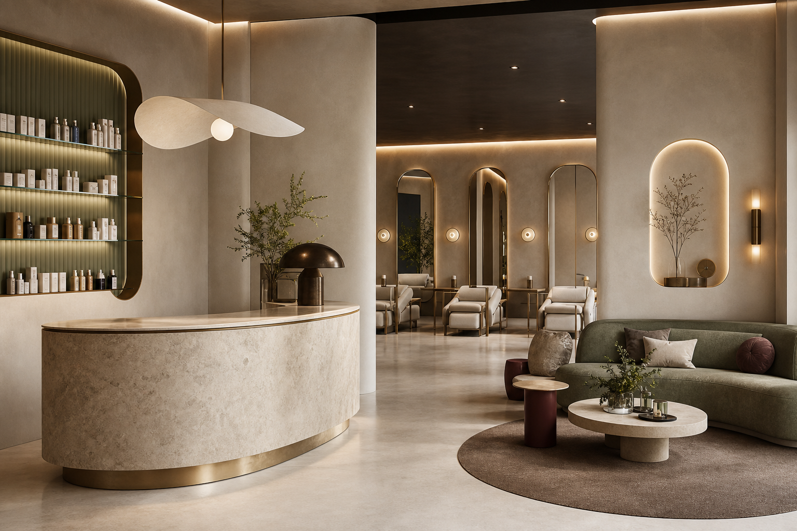

Reception, waiting, display, and treatment zones in a clear sequence.

Wellness / Salon / Spatial Identity
Soft function, sharp identity.
- Focus
- Reception flow, display, calm brand atmosphere
- Scope
- Concept, layout, material palette, 3D visuals
- Atmosphere
- Clean, serene, chic, tactile
A calm interior sequence shaped around reception, display, treatment flow, and soft material transitions.
Curved surfaces and integrated niches soften the commercial function.
Microcement, stone, glass, and warm upholstery.